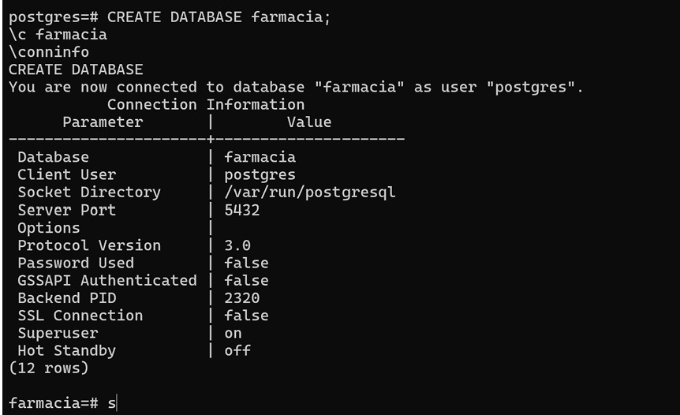
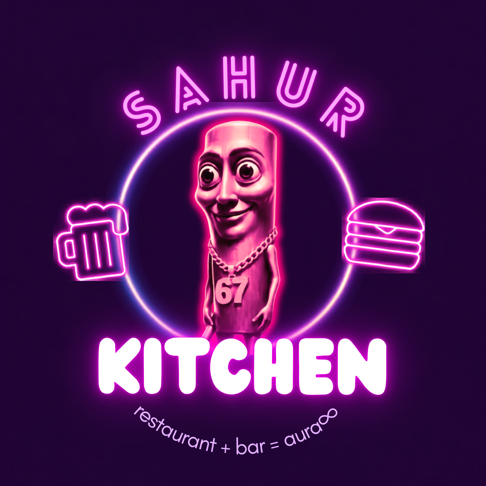

Portafolio personal
Esta pagina. Muestra mi informacion, habilidades y proyectos.
Tecnologias: HTML, CSS, JavaScript
Estudiante de Ingenieria de Software
Este es mi portafolio. Aqui puedes ver lo que he aprendido en la carrera y los pocos proyectos que he hecho.
Datos personales
Soy estudiante de tercer semestre de Ingenieria de Software. Estoy aprendiendo desarrollo web y bases de datos, y hago proyectos pequeños para practicar lo que veo en clases. No soy el mejor , pero trto de hacer lo que puedo para sobrevivir la carrera, quiero superarme y centrate en mi para poder ser mejor y cuando me vea al espejo ser mejor que ayer, no solo en la escuela, sino , en la vida , en mi vida, tengo miedos, inseguridades , problemas , como todos los demas , despierto todas las mañanas y aun que no se sepa lo que tengo que hacer pongo un pie delante del otro y trato de tomar las mejores decisiones que puedo, me equivoco muchas veces pero de eso se trata ser un humano y esa es mi mayor fortalesa
En la carrera he visto requerimientos, modelado de bases de datos, diagramas UML y prototipos de interfaces. He usado HTML, CSS y JavaScript para paginas web, y PostgreSQL con Docker para bases de datos. Ademas que soy tecnico en Ciencia de Datos e Infromacion, me gustaria seguir aprendiendo y participar en proyectos reales y grandes.
Desarrollo web, videojuegos y bases de datos.
Esta pagina. Muestra mi informacion, habilidades y proyectos.
Tecnologias: HTML, CSS, JavaScript

Practica de base de datos para una farmacia, hecha desde la terminal. Forma parte de una actividad de la materia Bases de Datos
Tecnologias: PostgreSQL, SQL, Docker

Marca y prototipo de baja fidelidad para un restaurante bar ficticio hecho en canva.
Tecnologias:Canva
Mi formacion, habilidades y proyectos en una hoja, en formato PDF.